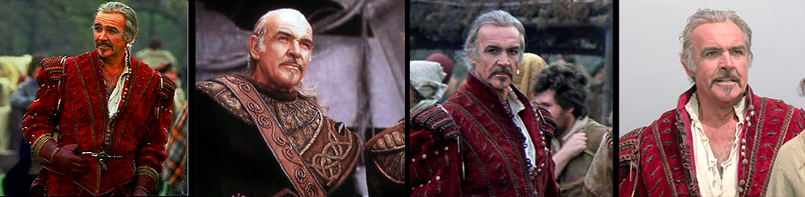
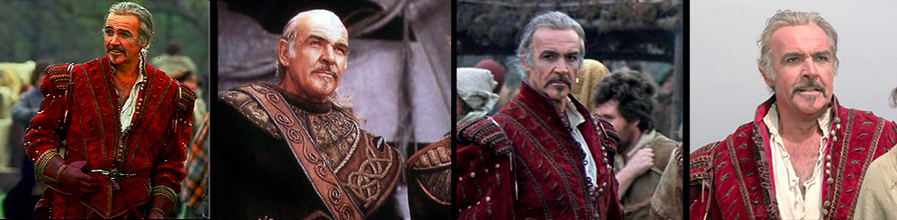

Sir Sean Connery - a legend
{kind=link}
{kind=link}
{kind=link}
{kind=link}
{kind=link}
Sir Thomas Sean Connery was born August 25, 1930 in Edinburgh, Scotland.
He is a Scottish actor and producer who has won an Academy Award, two BAFTA Awards and three Golden Globes.
He became famous for playing the role of James Bond.
Connery has been polled as "The Greatest Living Scot" and "Scotland's Greatest Living National Treasure".
Connery is known for his trademark Scottish accent and his good looks.
"He's one of the few men who has stayed sexy with age," says Barbara Carrera, who played a Bond siren in 1983's Never Say Never Again.
In 1989, he was proclaimed "Sexiest Man Alive" by "People" magazine and in 1999, at age 69, he was voted "Sexiest Man of the Century".
What women want is a guy who's been around - and who still is. That's why Sean Connery is the sexiest man alive.
He was knighted by Her Majesty Queen Elizabeth II in July 2000 and received honors at the Kennedy Center in the US.
Throughout his life, Sir Sean Connery has been an ardent supporter of Scotland.
While it is generally accepted that his support of Scotland's independence and the Scottish National Party delayed his knighthood for many years,
his commitment to Scotland has never wavered. Politics in the United Kingdom often has more intrigue than a James Bond plot.
While Scotland is not yet independent, she does have a new parliament. Sir Sean campaigned hard for the yes vote during the Scottish Referendum that created the new Scottish Parliament.
He believes firmly that the Scottish Parliament will grow in power and that Scotland will be independent within his lifetime.